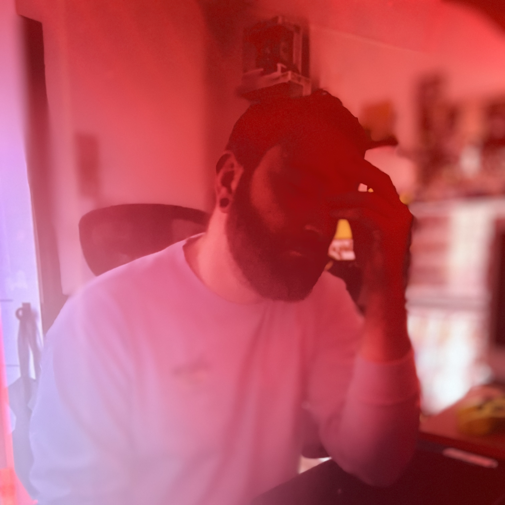

Born and raised in Central Wisconsin.
Zachary is currently working to get his Associates degree
as a Software Development student at Mid-State Technical College.
He is also convinced that he says "bag" like everyone else in the world.
(He doesn't.)
Over the past few months, he has created works for Kathy Yang.
That's about it... for now.
Zachary enjoys using darker tones with pops of color to create
an edgy visual to send a message.
When Zachary isn't working super hard on his very important homework,
You can find him spending time with his lovely partner and their three cats,
playing bass in a small metal band, or tending to plants in his backyard.
In all honesty, you will most likely find him snuggled up with a cat (and maybe his partner)
enjoying a reality competition show or a unnecessarily long video game.
Zachary Driscoll
Professional Summary
A customer-focused problem solver pivoting into web design with a foundation
built on 5+ years of experience in the tech and service industries. My background
in banking, retail leadership, and client interaction has sharpened my eye for
detail, my empathy for user needs, and my ability to create intuitive, visually
engaging experiences.
Work Experience
Assistant Store Leader
Wild Roots Apothocary
May 2025 - Current
Assistant Store Leader
Wild Roots Apothocary
May 2025 - Current
Universal Banker
Summit Credit Union
March 2024 - September 2024
Education
Software Development Degree
Mid-State Technical College - Stevens Point, WI
Spring 2025 - Current
Diploma
Mosinee High School - Mosinee
June 2010
↖ Indeed Resume